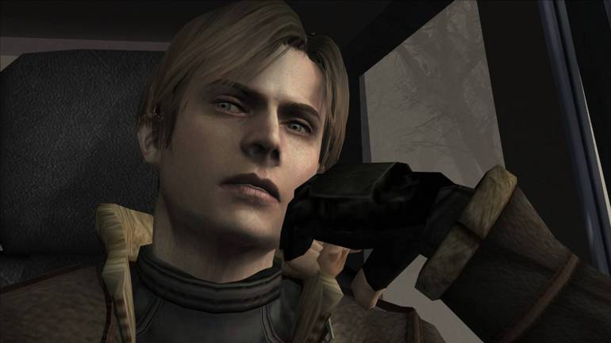
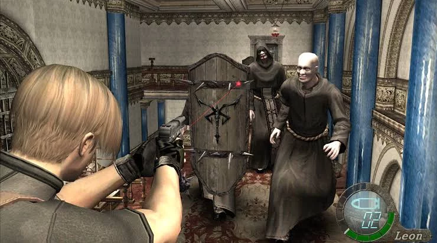

Introdução
Resident Evil 4 é um jogo de ação e terror lançado em 2005 pela Capcom. Ele foi desenvolvido para PlayStation 2, GameCube e Xbox, mas desde então foi portado para várias outras plataformas. O jogo foi um marco na franquia Resident Evil, introduzindo uma nova perspectiva de câmera e mudando significativamente o estilo de jogo em comparação com os títulos anteriores.
Enredo
A trama de Resident Evil 4 segue Leon S. Kennedy, um agente especial do governo dos Estados Unidos, enviado para resgatar a filha do presidente, Ashley Graham, que foi sequestrada por um culto misterioso na Europa. A narrativa leva Leon a uma vila rural infestada de criaturas hostis e infectadas por um novo tipo de parasita, conhecido como Las Plagas.
Jogabilidade
Diferente dos jogos anteriores da série, Resident Evil 4 adotou uma perspectiva de câmera sobre o ombro, oferecendo uma jogabilidade mais intensa e focada na ação. Os jogadores controlam Leon enquanto ele enfrenta hordas de inimigos, utiliza uma variedade de armas e resolve quebra-cabeças para progredir na história. Além disso, o jogo introduziu um sistema de mira mais intuitivo, permitindo uma precisão maior nos disparos.
Personagens
Ao longo do jogo, Leon encontra e interage com diversos personagens, incluindo Ada Wong, uma espiã misteriosa que desempenha um papel importante na trama. Ele também enfrenta chefes poderosos e icônicos, como El Gigante e o chefe final Saddler. Resident Evil 4 é conhecido por sua atmosfera tensa, momentos de ação emocionantes e elementos de horror característicos da série.
Mais sobre Re4
O sucesso de Resident Evil 4 foi imenso, sendo aclamado tanto pela crítica quanto pelos fãs. O jogo recebeu vários prêmios de Jogo do Ano e é considerado um dos melhores jogos de todos os tempos. Ele teve um impacto significativo na indústria de jogos, influenciando outros títulos de ação e terror, e levou a Capcom a continuar desenvolvendo novos jogos da franquia Resident Evil com uma abordagem mais voltada para a ação.